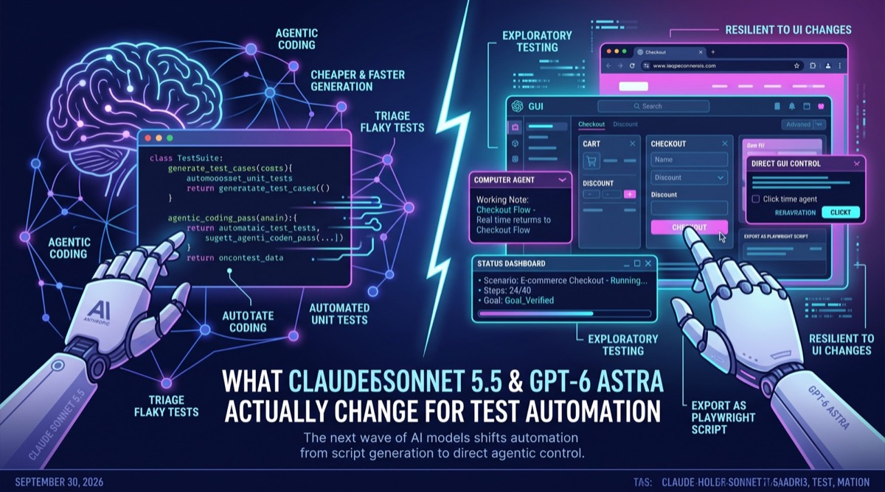

Šta Claude Sonnet 5.5 i GPT-6 Astra zaista mijenjaju u automatizaciji testiranja
Najnoviji modeli kompanija Anthropic i OpenAI donose jeftinije agentsko kodiranje i direktnu kontrolu grafičkog interfejsa — evo šta to znači za QA, a šta ne.
Dva nova vodeća modela izašla su u istom mjesecu: Claude Sonnet 5.5 kompanije Anthropic i GPT-6 Astra kompanije OpenAI. Nijedan nije napravljen posebno za QA, ali oba mijenjaju ono što je praktično automatizovati, i to u dva različita pravca — jedan čini agentsko kodiranje i generisanje testova znatno jeftinijim, a drugi daje agentima mogućnost da direktno upravljaju grafičkim interfejsom, umjesto da samo čitaju i pišu kod. Za tim koji odlučuje gdje da uloži sljedeći napor u automatizaciju, ta razlika je bitnija od marketinškog imena bilo kog od ta dva modela.

Dva različita unapređenja, ne jedno
Glavna promjena kod Sonnet 5.5 je efikasnost, a ne nova sposobnost. Na Anthropic-ovim benchmarkovima za agentsko kodiranje skače sa otprilike 10% na preko 70% na Terminal-Bench 4.0 u poređenju sa prethodnim Sonnet 5, a prvi korisnici navode da mu treba trećina manje poziva alata i otprilike upola manje shell komandi da završi isti zadatak. Izlaz se generiše preko 30% brže, a cijena po zadatku pada za sličan procenat, uz istu cijenu po tokenu. U QA procesima to se uglavnom vidi kao promjena u cijeni i brzini: generisanje skupa testova, trijaža izvještaja o nestabilnim testovima ili agentski code review na PR-u postaju primjetno jeftiniji i brži za iteriranje, ali se ne mijenja vrsta testiranja koja je sada moguća.
GPT-6 Astra je drugačija vrsta unapređenja. Njegova najistaknutija sposobnost je upravljanje računarom (computer use) — rad sa softverom kroz isti grafički interfejs koji bi koristila osoba, umjesto kroz kod ili API. OpenAI navodi rezultat od 72,6% na OSWorld 2.0, benchmarku za izvršavanje višekoračnih zadataka u stvarnim softverskim okruženjima, u odnosu na 65,7% prethodnog modela GPT-5.6. U Codex-u je dobio i mogućnost da vodi radne bilješke kroz više kontekstnih prozora na dugim zadacima, umjesto da se oslanja samo na sažimanje starog konteksta — korisno za sesiju koja obuhvata pregled zahtjeva, implementaciju i izvršavanje testova, a da se ne izgubi trag o tome šta je već provjereno. Ta kombinacija — kontrola GUI-ja plus duža radna memorija — ono je što je zaista novo za testiranje, jer upućuje na agente koji mogu da provedu pretraživač ili desktop aplikaciju kroz testni scenario onako kako to rade istraživački testeri, umjesto da samo pišu skripte nad DOM-om.
Kako to izgleda u jednom testnom toku
Praktična promjena je prelazak sa "generiši Playwright skriptu" na "opiši scenario i pusti agenta da direktno upravlja aplikacijom", uz mogućnost da nakon toga napravi skriptu za ponovnu upotrebu. Grubi oblik takvog toka rada:
# Illustrative — not a specific product's API
agent = ComputerUseAgent(model="gpt-6-astra")
result = agent.run_scenario(
goal="""
Add two items to the cart, apply a single valid discount code,
complete checkout with a saved card, and confirm the order total
matches subtotal minus the discount. Then attempt to apply a
second discount code and confirm it is rejected, not stacked.
""",
app_url="https://staging.example.com",
max_steps=40,
)
assert result.status == "goal_verified"
assert result.evidence.get("stacking_rejected") is True
# Ask the agent to emit a deterministic script from the successful run
script = agent.export_as_playwright(result.trace)Zanimljivo nije to što agent može da prokliče kroz checkout — automatizacija zasnovana na lokatorima to radi godinama. Zanimljivo je to što agent tumači ekran onako kako to radi čovjek, pa promjena rasporeda koja bi pokvarila krhki CSS selektor ne mora nužno da pokvari scenario, a isti cilj opisan prirodnim jezikom može se usmjeriti na redizajniran UI bez prepravljanja selektora. Korak export_as_playwright bitan je koliko i samo pokretanje: ovakvo istraživačko pokretanje nije nešto što želite stalno da ponavljate sa agentom u CI-ju, i zbog cijene i zbog istog problema "orakla" koji ima svaki test napisan uz pomoć AI-ja — mora se pretvoriti u nešto determinističko i pregledati prije nego što postane kapija.
Zamke i ograničenja
Nijedan od gore navedenih rezultata nije specifičan za QA; OSWorld, Terminal-Bench i SWE-Bench Pro mjere opštu kompetenciju u kodiranju i upravljanju računarom, a ne kvalitet testova, tako da visok rezultat ne govori da li agent provjerava pravu stvar kada kaže da je cilj "verifikovan". Isti problem orakla koji pogađa unit testove generisane AI-jem važi i ovdje — agent može zaključiti da je checkout scenario "prošao" samo zato što se pojavio ekran s potvrdom, bez ispravne provjere da je ukupan iznos dobro izračunat. Agenti za upravljanje računarom su i nedeterministički od pokretanja do pokretanja, što ih čini lošim izborom za CI kapiju koja mora pouzdano da prođe ili padne za isti ulaz; bolje odgovaraju sesijama istraživačkog testiranja i otkrivanja regresija nego blokiranju merge-a. Cijena je takođe stvarna — agentsko pokretanje od više desetina koraka nad živom aplikacijom znatno je skuplje od skriptovanog testa, pa pokretanje na svakom pull requestu za sada nema smisla. A GPT-6 Astra je izašao uz to da ga OpenAI u okviru svog preparedness okvira klasifikuje kao model sa "kritičnim" sajber sposobnostima, što je signal da treba pažljivo odlučiti koji pristup alatima i koje kredencijale dobija bilo koji testni agent zasnovan na njemu, umjesto da mu se podrazumijevano da širok pristup okruženju.
Šta dalje
Izaberite jedan zadatak istraživačkog testiranja ili otkrivanja regresija koji vaš tim trenutno radi ručno — smoke prolaz prije izdanja ili provjeru toka nakon redizajna — i na njemu isprobajte agenta za upravljanje računarom, umjesto da odmah pokušavate da zamijenite skriptovane CI testove. Zadržite svoje determinističke testove, zasnovane na lokatorima ili API-ju, kao stvarnu CI kapiju, a agentska pokretanja tretirajte kao način da dobijete kandidate za scenarije i skripte, ne kao samu kapiju. Nekoliko nedelja pratite trošak tokena i pokretanja po agentskoj testnoj sesiji prije nego što odlučite koliko često se isplati pokretati je. I prije nego što bilo kom testnom agentu date kredencijale ili širok pristup alatima, provjerite system card ili bezbjednosnu dokumentaciju dobavljača za taj konkretan model — klasa sposobnosti modela GPT-6 Astra razlog je da pristup ograničite promišljeno, a ne razlog da izbjegavate alat.
Izvori
- Introducing Claude Sonnet 5.5 (Anthropic)
- Anthropic Claude Sonnet 5.5 gets faster without a price hike (Help Net Security)
- Anthropic debuts Claude Sonnet 5.5 running 30% faster (SiliconANGLE)
- OpenAI Releases GPT-6 Astra for Coding and Computer Use (InfoQ)
- GPT-6 Astra System Card (OpenAI Deployment Safety Hub)